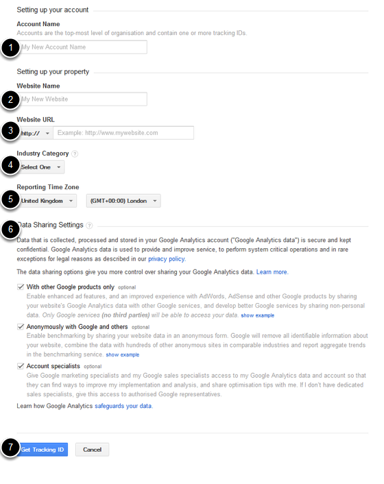

If you would like to track visitors to your website you will need to set up a Google Analytics Account. This shows you how to set up your account to get the analytics tracking code which gets added to all your webpages so that your visitors can be tracked.
You will need a google account for your department to set up a google analytics account. You can either set up a google email address ( go to: http://accounts.google.com/SignUp ) or use a University email address. You should use a general email address so that the account isn’t tied to an individual’s email address.
Help on Google Analytics is available from Google at: http://support.google.com/analytics/
After deciding on the email address you are going to use go to: http://www.google.co.uk/analytics/ and click on create an account.
Either: 1. If you already have a google account for your department enter the details and click on Sign in or: 2. If you don’t have a google account click on Create an account, fill in details to create a google account and then return to http://www.google.co.uk/analytics/ and enter your details.
Click on Sign up
Make sure that Website is selected.
Then scroll down the page and enter details of your site:
6. Decide on your Data Sharing Settings. You can get more information on this from the Google website by clicking on the question mark icon next to the Data Sharing Settings heading. 7.Click on Get Tracking ID.
Once you have accepted the terms and conditions you will be taken to a page with your tracking code. Email us this tracking code so that it can be included on all your webpages.